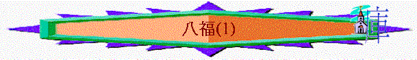

八福(1)
＠──代表遊戲或活動或發問 ～──代表講解
引起動機遊戲：
＠教員預先用咭紙寫下一些好品格及不好品格字眼，例如：謙卑、驕傲、自大、冷酷、無情、身同感受、溫柔、忍耐、義、不義、同情、虛心、自以為是、小器(每張咭寫一個品格)，叫一組員用語及行動表達，其他組員估一估。
〜當時的猶太人自以為自己有美好的品格，可進到天國，但耶穌糾正他們的觀念，真正配得天國福樂的子民必須有以下品格
一.虛心(太5:3)
～一開始對眾人及門徒所講是虛心，虛心意思是「心靈貧窮」，路6:20說「貧窮」，猶太人希望擁有財富，富有是尊貴的象徵，但很奇怪，要得天國，卻要反過來「貧窮」。
～此「貧窮」可能有兩個意思，第一是心靈覺得自己不完全，不足，要來到神的面前承認悔改，這樣就得天國；第二是真正認識自己，發視在神面前自己仍是無有的，願時常有謙卑的心與神同行，這樣常在神面前承認貧窮，但後來反得實質天國的富足。
＠問組員你認為每星期有幾多零用錢(是你的底線)為之貧窮，若你不夠，你會怎樣？
引申若人自以為富足，自以為完全，他不會尋找神，不會看到自己不足，也不會承認自己是有罪的人，也不會接受救恩而入到天國。
＠今天，你自己認為自己的行為及品性有甚麼不足地方？(每人說一樣)
〜人看到自己不足，而謙卑尋求神，神必賜恩。
二.哀慟(太5:4)
～當一個基督徒肯面對自己心靈的不完全，也看到世界的不完美，他很自然會有哀慟，為罪，為世人難過，但在主裏必得安慰，而在新天新地中也沒有悲哀、哭號
＠每組選一位女組員，叫她們在最快時間內嘗試流眼淚。
〜最近有沒有一些事情/新聞令你哀慟的？
三.溫柔(太5:5)
＠每組選一位男組員，叫他們嘗試用拳頭打在軟墊/枕頭/有海棉的物品上，問他們有甚麼感覺？有否感到很強的反撞力。
〜溫柔的人就像海棉一樣，能以柔和承受壓逼及挑戰
～溫柔此字與「虛心」「謙卑」「忍耐」「無偽」「不爭競」「溫和」有關，不是以惡對惡，內心卻充滿主的謙和，不去堅持得祂甚麼，不「爭一口氣」，而昔日以撒沒與別人爭水井，但後來神反賜他得活井及地土，在神國裏，不爭競柔和的人，也必承受地土
四.飢渴慕義(太5:6)
＠若我們要遠足，只帶三件物品，你會帶甚麼？
〜任何人也會帶水，因為當飢渴的時候可飲用
〜我們要對美好的事及神的話語有渴慕的心
～人對「義」對美好的事情，對主(主就是義了)有渴慕的心，他們必得飽足(心靈上的滿足及在彌賽亞國度實質不餓的滿足)
＠以上四種的品格中，你最渴慕是那一種？
祈禱